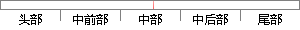

算是真正的RAID结构，只是单纯地提高性能，并没有为数据的可靠性提供保证， 如果 其中的一个磁盘失效，将影响到所有数据，因此RAID 0不能应用于数据安全性要求高的场合。 所以 RAID 0的优点 是
片段位置图

相似结果
相似片段：
的规范有如下几种: RAID 0:RAID 0连续以位或字节为单位分割数据，并行读/写于多个磁盘上，因此具有很高的数据传输率，但它没有数据冗余，因此并不能算是真正的RAID结构。RAID 0只是单纯地提高性能，并没有为数据的可靠性提供保证，而且其中的一个磁盘失效将影响到所有数据。因此，RAID 0不能应用于数据安全性要求高的场合。 RAID 1:它是通过磁盘数据镜像实现数据冗余，在成对的独立磁盘上产生互 为备份的数据。当原始数据繁忙时，可直接从镜像拷贝中读取数据，因此RAID 1可以提高
| 对比库： | WriteCheck云资源库 |
| 来源： | www.webko.cn 查看来源 |
| 发布时间： | 2013-12-14 |
| 相似率 | 76.32% （轻度抄袭） |